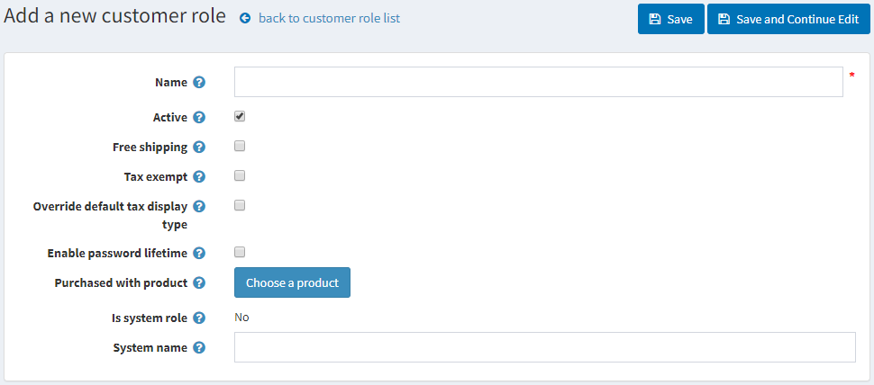

Customer roles
The customer roles in nopCommerce enable you to form groups of your web store users. You can create various groups, such as store admins, shoppers, vendors, and others. You can also grant these groups certain rights, such as discounted pricing and other special statuses (such as tax exemption, free shipping, and more) using the access control list.
To manage customer roles, go to Customers → Customer roles. The Customer roles window will be displayed as follows:

Click Add new to add a new customer role. The Add a new customer role window will be displayed:

Define the following information:
Name of the customer role.
Select Active to make this role active.
Select the Free shipping checkbox to enable customers with this role to get free shipping on their orders.
Select the Tax exempt checkbox to enable customers with this role to make tax-free purchases.
Select the Override default tax display type and select one of the tax types from the Default tax display type dropdown list:
- Including tax
- Excluding tax
Select the Enable password lifetime to force customers to change their passwords after a specified time.
Purchased with product. Click the Choose product button to choose a special product. A customer is added to this customer role once this product is purchased (paid).
Note
In the case of refund or order cancellation, you must manually remove a customer from this role.
Is system role. This setting shows whether this role is used in the code. It is predefined and cannot be modified.
System name of the customer role.
Click Save.